OWL 1.1 extends the W3C OWL Web Ontology Language with a small but useful set of features
that have been requested by users, for which effective reasoning algorithms are now available,
and that OWL tool developers are willing to support. The new features include extra syntactic
sugar, additional property and qualified cardinality constructors, extended datatype support,
simple metamodelling, and extended annotations. This document defines a functional-style syntax
for OWL 1.1, and provides an
informal discussion of the meaning of the additional constructs.
1 Introduction
This document defines the structure of Web Ontology Language
(OWL) 1.1. Unified Modeling Language (UML) class diagrams are used in order to make the definition precise.
The structure of OWL 1.1 ontologies is thus specified in a
structural way, by considering an ontology to be a collection of interconnected
objects. Moreover, since the structure of OWL 1.1 objects (ontologies, axioms, etc.)
is defined using well-understood notions of composition, sets, and lists,
it allows us to explicitly specify when two objects are structurally
equivalent.
Apart from a specification of the structure of OWL 1.1
ontologies, this document also defines a textual syntax for encoding
OWL 1.1 ontologies called the OWL 1.1 Functional-Style Syntax. The new syntax is similar
to the OWL 1.0 Abstract Syntax; it is, however, not backwards
compatible with the OWL 1.0 Abstract Syntax. The reason for this is that the OWL 1.0 Abstract Syntax syntax exhibits
several problems that would be very difficult to overcome without sacrificing
backwards compatibility.
2 Basic Definitions
The UML notation used in this document is restricted to a
very limited subset of UML class diagram notation. The names of
abstract classes (that is, the classes that are not intended to be instantiated)
are written in italic.
The grammar of OWL 1.1 is presented in the standard BNF notation. Nonterminal symbols
are written in bold (e.g., owlClassURI), terminal
symbols are written in single quotes (e.g. 'ObjectPropertyRange',
zero or more instances of a symbol is denoted with curly braces
(e.g., { description }),
alternative productions are denoted with the vertical bar (e.g.,
fact | declaration),
and zero or one instances of a symbol are denoted with square brackets
(e.g., [ description ]).
2.1 Associations and Object Equivalence
Many associations between objects in OWL 1.1 ontologies are of one-to-many type; for example, an
ObjectUnionOf class contains a
set of disjuncts. Usually, it is important to know whether the
objects in the association are ordered and whether repetitions
are allowed. This is made clear by attaching the following UML
stereotypes to associations between objects:
- The <<set>> stereotype denotes that the associated objects
are unordered and that repetitions are not allowed.
- The <<list>> stereotype denotes that the associated objects
are ordered and that repetitions are allowed.
To make this definition precise, it is necessary
to say when two objects are considered to be the same. This is captured by the
notion of structural equivalence, defined as follows.
Objects o1 and o2 are structurally
equivalent if the following conditions hold:
- If o1 and o2 are atomic values,
such as strings, integers, or URI, they are structurally equivalent if they are the same.
- If o1 and o2 are sets, they are
structurally equivalent if each element of o1
is structurally equivalent to some element of o2
and vice versa.
- If o1 and o2 are lists, they are
structurally equivalent if they contain the same number of elements and
each element of o1 is
structurally equivalent to the element of o2
with the same index.
- If o1 and o2 are complex objects
composed of other objects, they are structurally equivalent if
- both o1 and o2 are of the same type,
- each member of o1 is structurally equivalent to the corresponding member of
o2, and
- each association of o1
is structurally equivalent to the corresponding association of o2.
For example, the description ObjectUnionOf( Person Animal )
is structurally equivalent to description ObjectUnionOf( Animal Person )
because the order of the elements in a set is not important.
Note that structural equivalence is not a semantic notion, as it is
based only on comparing object structures defined in this document. For example,
ObjectUnionOf( Person ObjectComplementOf( Person ) )
is not structurally equivalent to owl:Thing
even though it is semantically equivalent to it.
Although the <<set>> stereotype is
widely used in the specification, ontology files written in one of the syntaxes
(e.g., XML or RDF/XML) are not expected to be duplicate free. Defining the structure of the
language in this way, however, facilitates the specification of APIs for
manipulating OWL 1.1 ontologies programmatically; furthermore, it
provides the basis for the definition of complex operations on OWL 1.1 ontologies,
such as retraction of axioms.
2.2 URIs, Namespaces, and Integers
Ontologies and their elements are
identified using International Resource Identifiers (IRIs) that are
defined in [RFC-3987].
The syntax of full IRIs in OWL 1.1 is as follows:
Full-IRI := '<' IRI as defined in [RFC-3987] '>'
For readability, IRIs can be abbreviated using namespaces.
The syntax in this case is the same as in the XML Namespaces specification
[XML Namespaces]:
Abbreviated-IRI := QName from the XML Namespaces specification
IRI-prefix := as in XML Namespaces specification
OWL 1.0 uses Uniform Resource Locators (URIs) to identify
objects. To avoid overloading the terminology, we use the term 'URI' in
OWL 1.1 to stay compatible with OWL 1.0; however, an URI is either a full IRI
or an abbreviated IRI:
URI := Full-IRI | Abbreviated-IRI
Some grammar productions use numbers, which are defined as follows:
zero := '0'
nonZero := '1' | '2' | '3' | '4' | '5' | '6' | '7' | '8' | '9'
digit := zero | nonZero
postiveInteger := nonzero { digit }
nonNegativeInteger := zero | positiveInteger
The following standard namespace prefixes are used throughout this specification:
| Namespace prefix |
Namespace |
| rdf |
http://www.w3.org/1999/02/22-rdf-syntax-ns# |
| rdfs |
http://www.w3.org/2000/01/rdf-schema# |
| xsd |
http://www.w3.org/2001/XMLSchema# |
| owl |
http://www.w3.org/2002/07/owl# |
| owl11 |
http://www.w3.org/2006/12/owl11# |
| owl11xml |
http://www.w3.org/2006/12/owl11-xml# |
3 Ontologies
The structure of OWL 1.1 ontologies is shown in Figure 1. Each
ontology is uniquely identified with an ontology URI. This URI need not
be equal to the physical location of the ontology file. For example, a
file for an ontology with a URI http://www.my.domain.com/example
need not be physically stored in that location. A specification of a
mechanism for physically locating an ontology from its ontology URI is not in
scope of this specification.
The main component of an OWL 1.1 ontology is the set of axioms
that it contains. Note that this definition does not allow repetitions
of structurally equivalent axioms in an ontology. OWL 1.1 ontology files
are, however, not expected to enforce this and can simply eliminate duplicates.
Apart from a set of axioms, an OWL 1.1 ontology contains a
set of annotations. These can be used to associate information with an
ontology, such as the name of the ontology creator or the version of the
ontology. An annotation consists of an arbitrary annotation URI that specifies
the type of annotation and a constant specifying the value of the annotation.
OWL 1.1 allows for two kinds of annotation values:
- Annotation values can be constants. Note that these need not be just
strings; rather, any OWL 1.1 constant can be used. For example, one can
create an annotation whose value is a URI formatted according to the
XML Schema xsd:anyURI type specification.
- Annotation values can be ontology entities. Such annotations
make it clearer that the value is not just some constant, but an entity
from this or some other ontology.
In OWL 1.0, owl:imports was a special annotation URI,
which denotes that an ontology imports another ontology. In OWL 1.1, imports
are not ontology annotations, but are a separate
primitive, as discussed next; the owl:imports annotation property
has no built-in meaning.
Each ontology contains a possibly empty set of import declarations. An ontology
O directly imports an ontology O'
if O contains an import declaration whose value is
the ontology URI of O'. The relation imports is
defined as a transitive closure of the relation directly imports.
The axiom closure of an ontology O is the smallest
set containing all the axioms of O and of all
ontologies that O imports. Intuitively, an import declaration
specification states that, when reasoning with an ontology O,
one should consider not only the axioms of O,
but the entire axiom closure of O.
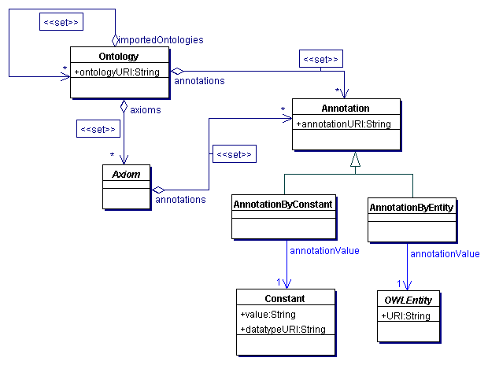
Figure 1. OWL Ontologies
OWL 1.1 allows each axiom to contain annotations. These can be
used to associate arbitrary information with an axiom. This information
does not affect the semantics of the language in any way. For example, axiom
annotations could be used to associate information with each axiom
about who asserted the axiom. Since annotations are part of an axiom, they are to
be taken into account in the definition of structural equivalence of
axioms. For example, the axiom
SubClassOf( Human Animal )
is not structurally equivalent to the axiom
SubClassOf( Comment("Humans are a type of animals.") Human Animal)
even though the semantics of the two axioms is equivalent.
Annotations with the common URIs rdfs:label and rdfs:comment are abbreviated as follows:
labelAnnotation := 'Label' '(' constant ')'
commentAnnotation := 'Comment' '(' constant ')'
All other annotations are written using the following grammar:
annotationURI := URI
explicitAnnotationByConstant := 'Annotation' '(' annotationURI constant')'
annotationByConstant := explicitAnnotationByConstant | labelAnnotation | commentAnnotation
annotationByEntity := 'Annotation' '(' annotationURI entity')'
annotation := annotationByConstant | annotationByEntity
The syntax for OWL 1.1 ontology files is defined as follows:
ontologyFile := { namespace } ontology
namespace := 'Namespace' '(' IRI-Prefix '=' Full-IRI ')'
ontology := 'Ontology' '(' ontologyURI { importDeclaration } { annotation } { axiom } ')'
ontologyURI := URI
importDeclaration := 'Import' '(' URI ')'
axiom := classAxiom | objectPropertyAxiom | dataPropertyAxiom | fact | declaration | entityAnnotation
The namespace production defines
an abbreviation for namespaces in a document. In each document,
only one namespace declaration can exist for a given
IRI-prefix. These prefixes are then
used to expand abbreviated namespaces as specified in
the XML Namespaces specification [XML Namespaces].
4 The Concept Language
We now define the concept language of OWL 1.1.
4.1 Entities
Entities are the fundamental building blocks of OWL 1.1
ontologies, and their hierarchy is shown in Figure 2.
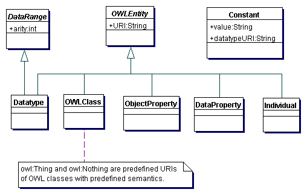
Figure 2. The Hierarchy of Entities in OWL 1.1
All entities are defined by a URI. The syntax for encoding entity URIs in OWL 1.1 is as follows:
datatypeURI := URI
owlClassURI := URI
objectPropertyURI := URI
dataPropertyURI := URI
individualURI := URI
Entities are encoded in the following way:
entity := datatype | owlClass | objectProperty | dataProperty | individual
datatype := 'Datatype' '(' datatypeURI ')'
owlClass := 'OWLClass' '(' owlClassURI ')'
objectProperty := 'ObjectProperty' '(' objectPropertyURI ')'
dataProperty := 'DataProperty' '(' dataPropertyURI ')'
individual := 'Individual' '(' individualURI ')'
OWL 1.1 defines several well-known entities that have the predefined semantics. These entities are identified by the following predefined URIs:
- A class with a URI owl:Thing is the set of all objects.
(In DL literature this is often called the top concept.)
- A class with a URI owl:Nothing is the empty set of objects.
(In DL literature this is often called the bottom concept.)
- A unary datatype with a URI rdfs:Literal containing the set of all concrete objects.
- The datatypes with URIs as mentioned in [OWL 1.1 Semantics].
OWL 1.1 uses constants to describe atomic values, such as
strings or integers. Constants consist of a string value optionally
followed by a datatype URI, as specified in the RDF specification
[RDF Syntax]:
string := '"' a Unicode string in normal form C '"'
languageTag := a language tag specified in [RFC-3066]
untypedConstant := string [ '@' languageTag ]
typedConstant := string '^^' datatypeURI
constant := typedConstant | untypedConstant
All typed constants are required to be well-formed -- that is, the string value
must be formatted as dictated by the rules for the datatype identified by datatypeURI.
All untyped constants are well-formed by default.
4.2 Object and Data Property Expressions
Object properties can be combined into more complex expressions, as show
in Figure 3. In OWL 1.1, only inverse property expressions
are allowed. The
grammar for object property expressions is as follows:
inverseObjectProperty := 'InverseObjectProperty' '(' objectPropertyExpression ')'
objectPropertyExpression := objectPropertyURI | inverseObjectProperty
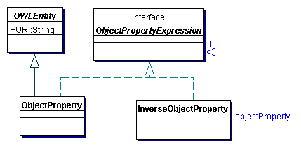
Figure 3. Object Property Expressions
For symmetry, OWL 1.1 also allows for data property expressions, as shown in Figure 4;
the only type of data property expressions are, however, data properties. The grammar
for data property expressions is as follows:
dataPropertyExpression := dataPropertyURI
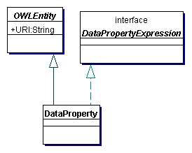
Figure 4. Data Property Expressions
4.3 Data Ranges
OWL 1.1 provides several ways to define a range over data
values, as shown in Figure 5. A datatype
is a fundamental type of data range that is defined by a URI. Each datatype URI
is associated with a predefined arity (note that the same datatype URI cannot
be used with different arities). The list of the datatypes supported in OWL 1.1
is given in [OWL 1.1 Semantics];
furthermore, this list can be extended by implementations as needed. The meanining
of OWL 1.1 ontologies containing a datatype URI not supported by an implementation
is not defined by this specification; the implementations are allowed to signal an
error in this case.
Complex data ranges can be constructed from the simpler ones
using the dataComplementOf constructor,
which takes a data range and returns its complement (with the same arity),
Furthermore, data ranges consisting exactly of the specified set of
constants can be formed using the dataOneOf
constructor (and it has the arity one). Finally, the datatypeRestriction
constructor creates a data range by applying a facet to a particular data range. A restriction
consists of a constant restriction value and a facet type that is applied to the
data range in question. The following facet types are supported in OWL 1.1:
length, minLength, maxLength, pattern, minInclusive, minExclusive,
maxInclusive, maxExclusive, totalDigits, and fractionDigits.
The semantics of the facets is defined in the XML Schema Datatypes Specification
[XML Schema Datatypes].
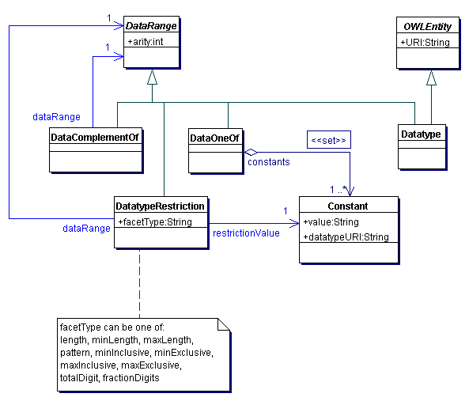
Figure 5. Data Ranges of OWL 1.1
The grammar for OWL 1.1 data ranges is as follows:
dataComplementOf := 'DataComplementOf' '(' dataRange ')'
dataOneOf := 'DataOneOf' '(' constant { constant } ')'
datatypeFacet :=
'length' | 'minLength' | 'maxLength' | 'pattern' |
'minInclusive' | 'minExclusive' | 'maxInclusive' | 'maxExclusive' |
'totalDigits' | 'fractionDigits'
restrictionValue := constant
datatypeRestriction := 'DatatypeRestriction' '(' dataRange datatypeFacet restrictionValue ')'
dataRange := datatypeURI | dataComplementOf | dataOneOf | datatypeRestriction
4.4 Entity Annotations
Often, it is desirable to annotate entities in an ontology; such an annotation might,
for example, specify a "human-friendly" label or comment. OWL 1.1 provides entity annotations
for this purpose; their structure is shown in Figure 6.
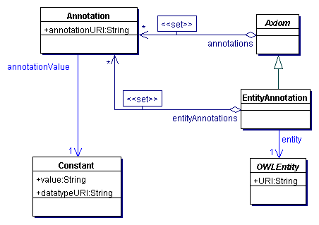
Figure 6. Entity Annotations in OWL 1.1
Note that an entity annotation axiom provides for two types of
annotation -- one for the axiom itself and
one for the entity. It is important to distinguish these two
types of annotation: the first one refers to the axiom (e.g.,
says who has asserted it), whereas the second one refers to the
entity itself (e.g., provides a human-friendly label). The grammar for
entity annotations is as follows:
annotationsForAxiom := annotation
annotationsForEntity := annotation
entityAnnotation := 'EntityAnnotation' '(' { annotationsForAxiom } entity { annotationsForEntity } ')'
Note that the production for the entityAnnotation
nonterminal requires an entity and
not a URI. Thus, an OWL class should be annotated as follows:
EntityAnnotation(OWLClass(Person) Comment("The set of all humans."))
This is so that the type of the entity being annotated can easily be determined from the syntactic form
of the entity annotation axiom.
5 Classes
OWL 1.1 provides an expressive language for forming classes.
For clarity, these are presented in three separate diagrams. The propositional
connectives are presented in Figure 7. The class objectUnionOf
is a disjunction of a set of classes, objectIntersectionOf
is a conjunction of a set of classes, objectComplementOf
is a negation of a class, and objectOneOf
is a class that contains exactly the objects denoted by the set of specified individuals. The
grammar for the propositional classes is defined as follows:
objectUnionOf := 'ObjectUnionOf' '(' description description { description } ')'
objectIntersectionOf := 'ObjectIntersectionOf' '(' description description { description } ')'
objectComplementOf := 'ObjectComplementOf' '(' description ')'
objectOneOf := 'ObjectOneOf' '(' individualURI { individualURI }')'
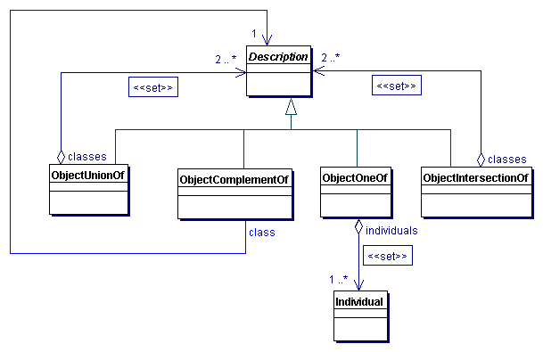
Figure 7. Propositional Connectives for the Formation of Classes
OWL 1.1 also allows classes to be defined by means of restrictions on
object properties, as shown in Figure 8. The class objectAllValuesFrom
denotes the set of objects that are connected via the given object property only to
instances of the given class, objectSomeValuesFrom denotes the set of
objects that are connected via the given object property to at least one instance of the
given class, objectExistsSelf denotes the
set of objects that are connected to themselves via the given object property,
and objectHasValue denotes the
set of objects that are connected via the given object property to the object denoted by the given individual.
The grammar for the restrictions is as follows:
objectAllValuesFrom := 'ObjectAllValuesFrom' '(' objectPropertyExpression description ')'
objectSomeValuesFrom := 'ObjectSomeValuesFrom' '(' objectPropertyExpression description ')'
objectExistsSelf := 'ObjectExistsSelf' '(' objectPropertyExpression ')'
objectHasValue := 'ObjectHasValue' '(' objectPropertyExpression individualURI ')'
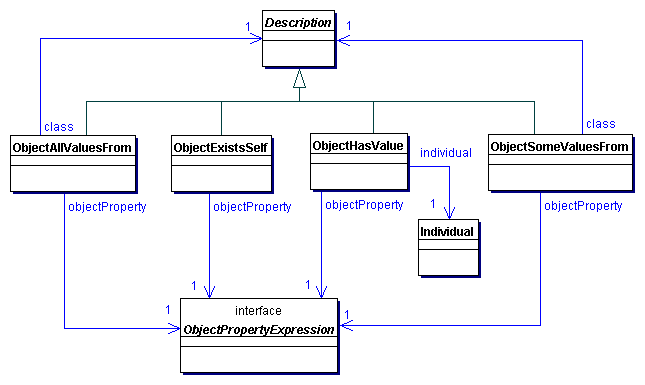
Figure 8. OWL 1.1 Classes Defined by Restriction on Object Properties
Finally, OWL 1.1 classes can be defined by restricting the
cardinality of associations between objects, as shown in Figure 9.
Cardinality restrictions can be qualified or unqualified, depending on whether
there is a restriction on the class of the connected individual; an unqualified cardinality restriction is equivalent to a qualified one where the restricting class is owl:Thing. The class objectMinCardinality
denotes the set of objects that are connected via the given object property to
at least the given number of instances of the given class, the class objectMaxCardinality
denotes the set of objects that are connected via the given object property to
at most the given number of instances of the given class, and the class objectExactCardinality
denotes the set of objects that are connected via the given object property to
exactly the given number of instances of the given class.
The grammar for
these restrictions is defined as follows:
cardinality := nonNegativeInteger
objectMinCardinality := 'ObjectMinCardinality' '(' cardinality objectPropertyExpression [ description ] ')'
objectMaxCardinality := 'ObjectMaxCardinality' '(' cardinality objectPropertyExpression [ description ] ')'
objectExactCardinality := 'ObjectExactCardinality' '(' cardinality objectPropertyExpression [ description ] ')'
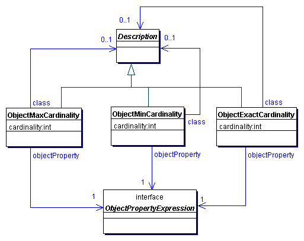
Figure 9. OWL 1.1 Classes Defined by Restricting Object Property Cardinalities
OWL 1.1 also allows for the definition of classes by
stating restrictions on data properties, as shown in Figure 10. The
notable distinction with respect to object property restrictions is that dataAllValuesFrom
and dataSomeValuesFrom restrictions
take a list of data property expressions, and not just a single property expression.
This is in order to support class definitions such as "objects whose width is greater
than their height", where the values of width and height are specified using two data properties. In such definitions, the arity of the given data range must be equal
to the number of the given data properties.
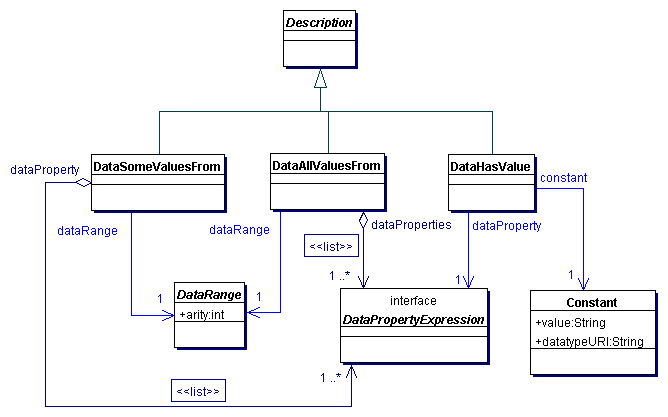
Figure 10. OWL 1.1 Classes Defined by Restriction on Data Properties
Figure 11 shows the restrictions that can be built by
stating cardinality restrictions on data properties. If the data range
is supplied, its arity must be one.
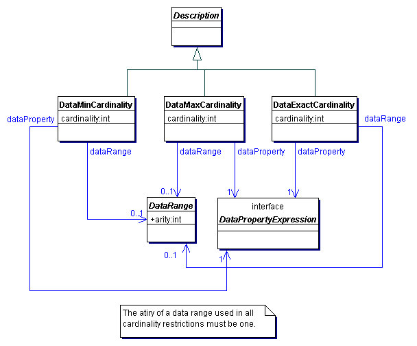
Figure 11. OWL 1.1 Classes Defined by Restriction on Data Properties
The grammar for restrictions on data properties is defined as follows:
dataAllValuesFrom := 'DataAllValuesFrom' '(' dataPropertyExpression { dataPropertyExpression } dataRange ')'
dataSomeValuesFrom := 'DataSomeValuesFrom' '(' dataPropertyExpression { dataPropertyExpression } dataRange ')'
dataHasValue := 'DataHasValue' '(' dataPropertyExpression constant ')'
dataMinCardinality := 'DataMinCardinality' '(' cardinality dataPropertyExpression [ dataRange ] ')'
dataMaxCardinality := 'DataMaxCardinality' '(' cardinality dataPropertyExpression [ dataRange ] ')'
dataExactCardinality := 'DataExactCardinality' '(' cardinality dataPropertyExpression [ dataRange ] ')'
The following grammar production integrates all types of classes in OWL 1.1:
description := owlClassURI | objectUnionOf | objectIntersectionOf | objectComplementOf | objectOneOf |
objectAllValuesFrom | objectSomeValuesFrom | objectExistsSelf | objectHasValue |
objectMinCardinality | objectMaxCardinality | objectExactCardinality |
dataAllValuesFrom | dataSomeValuesFrom | dataHasValue |
dataMinCardinality | dataMaxCardinality | dataExactCardinality
6 Axioms
This section lists the types of axiom that can be stated in
OWL 1.1. To make the presentation easier to follow, the axioms are
grouped by type. As already mentioned, an axiom may contain an
arbitrary number of annotations; furthermore, although annotations
do not affect the semantics of an axiom, they are taken into account
in the definition of structural equivalence.
6.1 Class Axioms
The class axioms of OWL 1.1 are shown in Figure 12. The
subClassOf axiom states that
one class is a subclass of another class. The
equivalentClasses axiom
takes a set of classes and states that they are all equivalent. The disjointClasses axiom
takes a set of classes and states that all classes from the set are pair-wise
disjoint. Finally, the disjointUnion axiom
defines a class as a union of other classes, all of which are pair-wise disjoint.
The grammar for the class axioms of OWL 1.1 is as follows.
subClass := description
superClass := description
subClassOf := 'SubClassOf' '(' { annotation } subClass superClass ')'
equivalentClasses := 'EquivalentClasses' '(' { annotation } description description { description } ')'
disjointClasses := 'DisjointClasses' '(' { annotation } description description { description } ')'
disjointUnion := 'DisjointUnion' '(' { annotation } owlClassURI description description { description } ')'
classAxiom := subClassOf | equivalentClasses | disjointClasses | disjointUnion
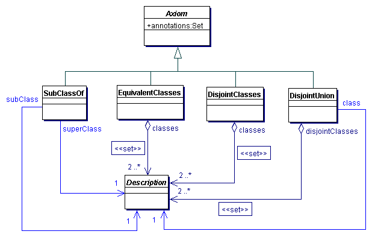
Figure 12. The Class Axioms of OWL 1.1
6.2 Object Property Axioms
OWL 1.1 provides for several different kinds of object property axioms. For clarity these are presented in two separate diagrams,
the first of which is Figure 13. The
equivalentObjectProperties axiom takes a set of object properties and states
that they are all equivalent, and the disjointObjectProperties axiom takes a
set of object properties and states that all properties from the set are pair-wise disjoint. Furthermore,
objectPropertyDomain and
objectPropertyRange specify the domain and
the range class, respectively, of an object property.
Finally, inverseObjectProperties
axiomatizes two properties to be inverse of each other.
These axioms are described using the following grammar:
subObjectPropertyExpression := objectPropertyExpression | 'SubObjectPropertyChain' '(' objectPropertyExpression objectPropertyExpression { objectPropertyExpression } ')'
subObjectPropertyOf := 'SubObjectPropertyOf' '(' { annotation } subObjectPropertyExpression objectPropertyExpression ')'
equivalentObjectProperties := 'EquivalentObjectProperties' '(' { annotation } objectPropertyExpression objectPropertyExpression { objectPropertyExpression } ')'
disjointObjectProperties := 'DisjointObjectProperties' '(' { annotation } objectPropertyExpression objectPropertyExpression { objectPropertyExpression } ')'
objectPropertyDomain := 'ObjectPropertyDomain' '(' { annotation } objectPropertyExpression description ')'
objectPropertyRange := 'ObjectPropertyRange' '(' { annotation } objectPropertyExpression description ')'
inverseObjectProperties := 'InverseObjectProperties' '(' { annotation } objectPropertyExpression objectPropertyExpression ')'
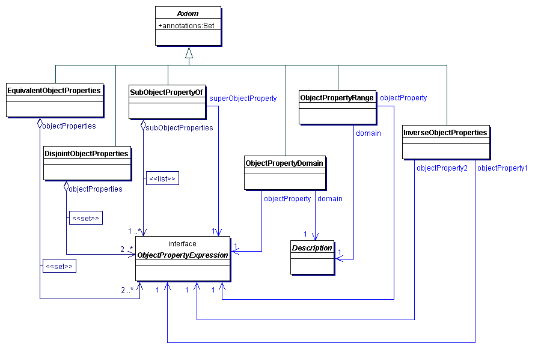
Figure 13. Object Property Axioms, Part I
In addition, OWL 1.1 provides for axioms that allow the
assertion of various characteristics of an object property, as specified in
Figure 14. Each of these axioms takes an object property and asserts that the property
has a certain characteristic, such as being functional or transitive. These
axioms are described by the following grammar:
functionalObjectProperty := 'FunctionalObjectProperty' '(' { annotation } objectPropertyExpression ')'
inverseFunctionalObjectProperty := 'InverseFunctionalObjectProperty' '(' { annotation } objectPropertyExpression ')'
reflexiveObjectProperty := 'ReflexiveObjectProperty' '(' { annotation } objectPropertyExpression ')'
irreflexiveObjectProperty := 'IrreflexiveObjectProperty' '(' { annotation } objectPropertyExpression ')'
symetricObjectProperty := 'SymmetricObjectProperty' '(' { annotation } objectPropertyExpression ')'
asymetricObjectProperty := 'AsymmetricObjectProperty' '(' { annotation } objectPropertyExpression ')'
transitiveObjectProperty := 'TransitiveObjectProperty' '(' { annotation } objectPropertyExpression ')'
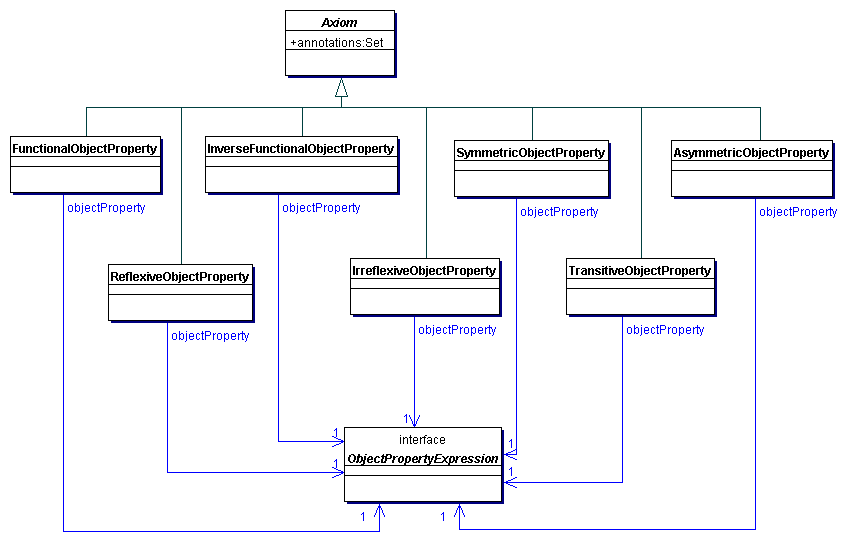
Figure 14. Axioms Defining Characteristics of Object Properties, Part II
The following grammar production merges all productions for object property axioms:
objectPropertyAxiom :=
subObjectPropertyOf | equivalentObjectProperties |
disjointObjectProperty | inverseObjectProperties |
objectPropertyDomain | objectPropertyRange |
functionalObjectProperty | inverseFunctionalObjectProperty |
reflexiveObjectProperty | irreflexiveObjectProperty |
symetricObjectProperty | asymetricObjectProperty |
transitiveObjectProperty
6.3 Data Property Axioms
Data property axioms are similar to object property
axioms, and are shown in Figure 15. Note that the
arity of the data range used in a dataPropertyRange
axiom must be one. The axioms are described by the following grammar:
subDataPropertyOf := 'SubDataPropertyOf' '(' { annotation } dataPropertyExpression dataPropertyExpression ')'
equivalentDataProperties := 'EquivalentDataProperties' '(' { annotation } dataPropertyExpression dataPropertyExpression { dataPropertyExpression } ')'
disjointDataProperties := 'DisjointDataProperties' '(' { annotation } dataPropertyExpression dataPropertyExpression { dataPropertyExpression } ')'
dataPropertyDomain := 'DataPropertyDomain' '(' { annotation } dataPropertyExpression description ')'
dataPropertyRange := 'DataPropertyRange' '(' { annotation } dataPropertyExpression dataRange ')'
functionalDataProperty := 'FunctionalDataProperty' '(' { annotation } dataPropertyExpression ')'
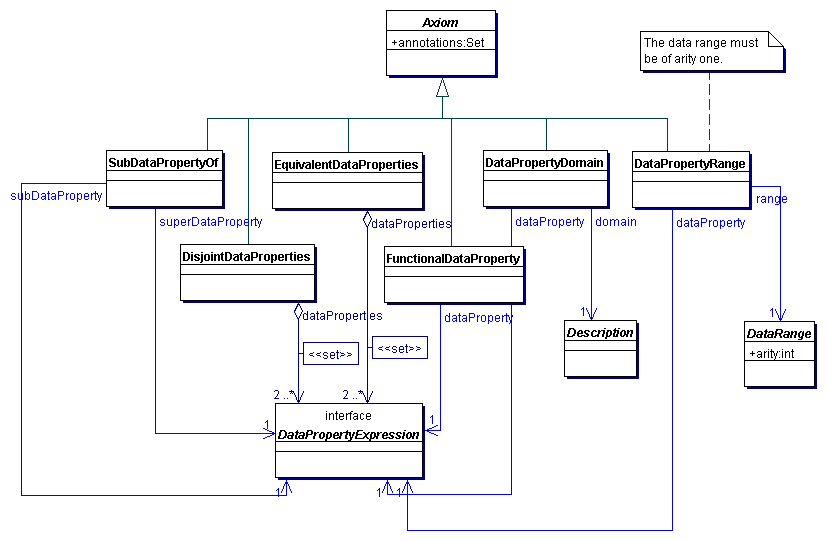
Figure 15. Data Property Axioms of OWL 1.1
The following grammar production merges all productions for data property axioms:
dataPropertyAxiom :=
subDataPropertyOf | equivalentDataProperties | disjointDataProperties |
dataPropertyDomain | dataPropertyRange | functionalDataProperty
6.4 Facts
OWL 1.1 supports a rich set of axioms for stating facts. Figure 16
shows the facts that can be stated about individuals and classes.
The sameIndividual axiom states that
each of the individuals from a given set denotes the same object, whereas the
differentIndividuals axiom states that
each of the individuals from a given set denotes a different object.
The classAssertion axiom states that the object
denoted by the given individual is an instance of the given class. The grammar for these axioms
is as follows:
sameIndividual := 'SameIndividual' '(' { annotation } individualURI individualURI { individualURI } ')'
differentIndividuals := 'DifferentIndividuals' '(' { annotation } individualURI individualURI { individualURI } ')'
classAssertion := 'ClassAssertion' '(' { annotation } individualURI description ')'
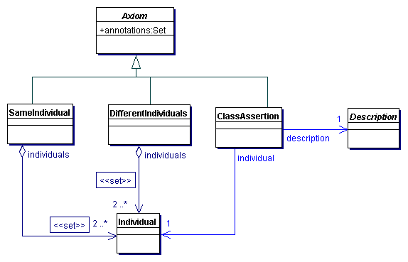
Figure 16. Class and Individual Assertions
The facts about object properties are shown in Figure 17.
The objectPropertyAssertion states
that the objects denoted by the given individuals are connected by the given property, whereas the
negativeObjectPropertyAssertion states that
the objects denoted by the given individuals are not connected by the given property. The grammar for
these axioms is as follows:
sourceIndividualURI := individualURI
targetIndividualURI := individualURI
objectPropertyAssertion := 'ObjectPropertyAssertion' '(' { annotation } objectPropertyExpression sourceIndividualURI targetIndividualURI ')'
negativeObjectPropertyAssertion := 'NegativeObjectPropertyAssertion' '(' { annotation } objectPropertyExpression sourceIndividualURI targetIndividualURI ')'
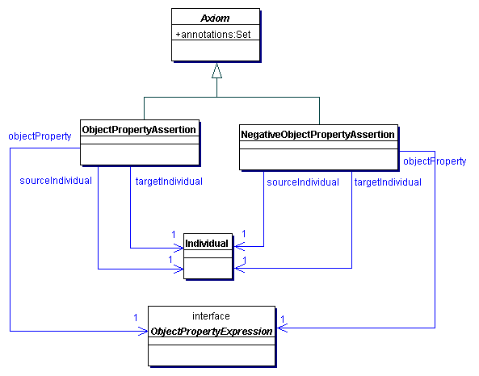
Figure 17. Object Property Assertions
The structure of axioms asserting facts about data properties
is similar and is shown in Figure 18. The dataPropertyAssertion
states that the value of a data property for an object denoted by the given individual is the
given constant, whereas the negativeDataPropertyAssertion
states the opposite. The grammar is as follows:
targetValue := constant
dataPropertyAssertion := 'DataPropertyAssertion' '(' { annotation } dataPropertyExpression sourceIndividualURI targetValue ')'
negativeDataPropertyAssertion := 'NegativeDataPropertyAssertion' '(' { annotation } dataPropertyExpression sourceIndividualURI targetValue ')'
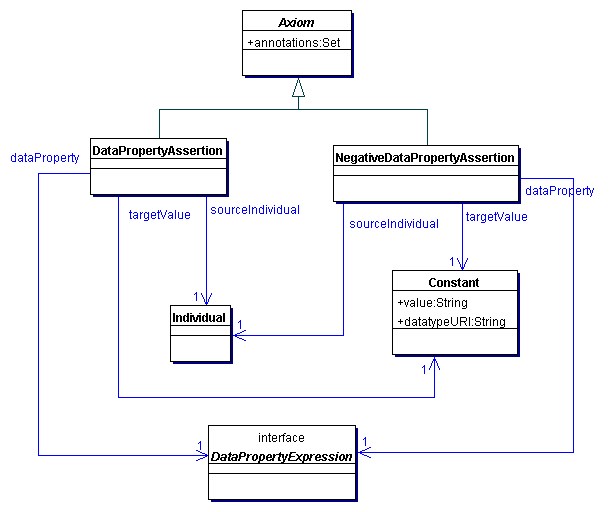
Figure 18. Data Property Assertions
The following production integrates all types of facts:
fact := sameIndividual | differentIndividuals | classAssertion |
objectPropertyAssertion | negativeObjectPropertyAssertion |
dataPropertyAssertion | negativeDataPropertyAssertion
7 Nonstructural Restrictions on Axioms
As explained in [SROIQ], to obtain a decidable
language, the axiom closure Ax of each OWL 1.1 ontology must
obey certain nonstructural restrictions, as defined next. In this section, we assume that
all object property expressions in Ax are either object properties
or inverses of an object property. This can be ensured by replacing all expressions
InverseObjectProperty( InverseObjectProperty(PE) )
with PE.
For an object property expression PE, the inverse property expression
INV(PE) is defined as follows:
- if PE is an object property OP,
then INV(PE) = InverseObjectProperty(OP);
- if PE is of the form InverseObjectProperty(OP) for
OP an object property, then INV(PE) = OP.
An object property expression PE is composite in Ax if
Ax contains an axiom of the form
- SubObjectPropertyOf(SubObjectPropertyChain(PE1 ... PEn) PE) with n > 1, or
- SubObjectPropertyOf(SubObjectPropertyChain(PE1 ... PEn) INV(PE)) with n > 1, or
- ObjectPropertyTransitive(PE), or
- ObjectPropertyTransitive(INV(PE)).
The object property hierarchy relation → is the smallest relation on object property expressions
for which the following conditions hold (A → B means
that → holds for A and B):
- if Ax contains an axiom
SubObjectPropertyOf(PE1 PE2), then
PE1 → PE2 holds; and
- if Ax contains an axiom EquivalentObjectProperties(PE1 PE2), then
PE1 → PE2 and
PE2 → PE1 hold; and
- if Ax contains an axiom InverseObjectProperties(PE1 PE2), then
PE1 → INV(PE2) and
INV(PE2) → PE1 hold; and
- if Ax contains an axiom SymmetriceObjectProperty(PE), then
PE → INV(PE) holds; and
- if PE1 → PE2 holds, then
INV(PE1) → INV(PE2) holds as well.
The relation →* is the reflexive-transitive closure of →.
An object property expression PE is simple in Ax if,
for each object property expression PE' such that
PE' →* PE holds,
PE' is not composite.
The axioms Ax satisfy the nonstructural restrictions of OWL 1.1 if the
following two conditions hold:
- Only simple object properties are allowed to occur in Ax in
- ObjectMinCardinality, ObjectMaxCardinality,
ObjectExactCardinality, and ObjectExistsSelf classes, and
- ObjectPropertyFunctional, InverseFunctionalObjectProperty,
ObjectPropertyIrreflexive, ObjectPropertyAsymetric,
and DisjointObjectProperty axioms.
- A strict partial order < on the object property expressions must exist
such that each SubObjectPropertyOf(SUB PE) axiom in Ax
fulfils the following conditions:
- SUB is of the form SubObjectPropertyChain(PE PE), or
- SUB is of the form InverseObjectProperty(PE), or
- SUB is of the form
SubObjectPropertyChain(PE1 ... PEn) and
PEi < PE for each 1 ≤ i ≤ n, or
- SUB is of the form
SubObjectPropertyChain(PE PE1 ... PEn) and
PEi < PE for each 1 ≤ i ≤ n, or
- SUB is of the form
SubObjectPropertyChain(PE1 ... PEn PE) and
PEi < PE for each 1 ≤ i ≤ n.
8 Declarations and Structural Consistency
In addition to axioms, OWL 1.1 also provides declarations, which can be
used to check the structural consistency of an ontology.
In OWL 1.1, it is possible to use a URI for an entity without explicitly
stating that an entity with such a name exists. For example,
the following is a correct OWL 1.1 ontology:
Ontology(<http://www.my.domain.com/example>
SubClassOf( Human Animal )
)
In this example, the classes Human and Animal
are used without explicitly stating
that they exist. This is desirable in many situations, since it allows
"anyone to say anything about anything," which is consistent with the
vision of the Semantic Web. This approach can, however, make it difficult to detect structural errors in ontologies;
a typographical error in a class name, for example, simply introduces a new class with a different name.
This issue can be addressed by using declarations to check the structural integrity of an ontology.
We say that an entity is declared in an ontology O
if either O or some ontology O'
imported by O contains a declaration axiom for the entity.
Note that an ontology may contain multiple declarations for the same entity, and that imported ontologies may do so as well. An ontology
O is structurally consistent
if each entity occurring in an axiom from the axiom closure of O is
declared in O. Note that, by this definition, the check applies also the entities
used in annotations; that is, these entities must be properly declared as well for an ontology to be structurally consistent.
Note that, although structurally consistency can be a very useful feature in some applications, OWL 1.1 does not require
ontologies to be structurally consistent. Thus, an ontology can be used even if it does not contain any declarations.
As shown in Figure 19, a declaration is a kind of axiom; this is in order to allow an ontology to be treated as simply a set axioms.
A declaration, however, imposes no constraints on the model-theoretic interpretation of an ontology (in the sense
of [OWL 1.1 Semantics]).
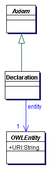
Figure 19. Entity Declarations in OWL 1.1
The grammar for declaraions is as follows:
declaration := 'Declaration' '(' { annotation } entity ')'
Note that the production for the declaration
nonterminal requires an entity and
not a URI. Thus, an OWL class should be declared as follows:
Declaration(OWLClass(Person))
This is so that the type of the entity being declared can easily be determined from the syntactic form
of the declaration.
Appendix A. Differences from OWL 1.0 Abstract Syntax
OWL 1.1 departs in its conceptual design and in syntax from
OWL 1.0 Abstract Syntax. In this section we summarize the differences
and explain the rationale behind the changes.
A.1 Dropping the Frame-Like Syntax
OWL 1.0 provides a frame-like syntax that allows several aspects of
a class, property or individual to be defined in a single axiom. For example, one can write the following axiom in OWL 1.0:
ObjectProperty(partOf inverseOf(containedIn) inverseFunctional transitive
Label("Specifies that an object is a part of another object.")
)
This type of axiom may cause problems in practice. In the first place,
it bundles many different features of the given object
into a single axiom. While this may be convenient when
ontologies are being manipulated by hand, it is not convenient for manipulating them programmatically.
In fact, most implementations of OWL 1.0 break such axioms apart into several "atomic"
axioms, each dealing with only a single feature of the object. However, this may cause
problems with round-tripping, as the structure of the ontology may be destroyed in the
process.
In the second place, this type of axiom is often misinterpreted as a declaration and unique
"definition" of the given object. In OWL 1.0, however, objects may be used without being the
subject of any such axiom, and there may be many such axioms relating to the same object.
Finally, OWL 1.0 does not provide means to annotate axioms, which has proved to be quite useful in practice.
These problems are addressed in OWL 1.1 in several ways.
First, the frame-like notation has been dropped in favor of a more
fine-grained structure of axioms, where each axiom describes just one feature of the given
object. Second, OWL 1.1 provides explicit declarations, and
an explicit definition of the notion of structural consistency. Finally, all axioms in OWL 1.1 can be
annotated, and declarations provide means for annotating entities.
For example, the above mentioned OWL 1.0 axiom can be represented in OWL 1.1 as follows:
Declaration(ObjectProperty(partOf)
Label("Specifies that an object is a part of another object.")
)
EquivalentObjectProperties(partOf InverseObjectProperty(containedIn))
InverseFunctionalObjectProperty(partOf)
ObjectPropertyTransitive(Comment("The partOf property is transitive.") partOf)
Although OWL 1.1 is more verbose, this should not
be a problem given that most OWL ontologies are created
using ontology engineering tools. Moreover, such tools are free to present the
information to the user in a more intuitive (possibly frame-like) way.
A.2 Inverse Property Expressions
In OWL 1.0, all properties are atomic, but it is possible to assert
that one object property is the inverse of another. For example, one
can assert the following axiom in OWL 1.0:
ObjectProperty(hasPart inverse isPartOf)
In OWL 1.1, property expressions such as InverseObjectProperty(hasPart)
can be used in class expressions, which avoids the need to give a name
to every inverse property. If desired, however, names can still be
given to inverse properties. For example, the following OWL 1.1 axiom
asserts that isPartOf is the inverse of hasPart,
and is thus equivalent to the mentioned OWL 1.0 axiom:
EquivalentObjectProperties(InverseObjectProperty(hasPart) isPartOf)
A.3 Separating the Vocabulary for Names
OWL 1.0 relies on the
separation of names between concepts, individuals, and object and
data properties, but the type of a given name may not be obvious from the context in which it is used. Consider, for example, the following OWL 1.0 axiom:
SubClassOf(Lion restriction(eats someValuesFrom(Animal)))
From this axiom alone, it is not clear how to
interpret the class restriction(eats someValuesFrom Animal):
one possibility is to treat eats as an object property
and Animal as a class, and the other one is
to treat eats as a data property and
Animal as a datatype. Examining other axioms in the ontology
(or in an imported ontology) may make it possible to disambiguate this one, but this is not required in OWL 1.0:
an ontology containing only the mentioned axiom is a correct OWL 1.0
ontology in which the intended usage of eats and
Animal cannot be disambiguated.
Hence,
parsing an OWL 1.0 ontology requires not only two passes through the ontology
being parsed, but also possibly parsing imported ontologies as well;
this makes parser implementation complex and error prone.
This problem is addressed in OWL 1.1 by explicitly typing each usage
of a name. For example, the above mentioned axiom can be represented in OWL 1.1 as follows:
SubClassOf(Lion ObjectSomeValuesFrom(eats Animal))
This makes it completely clear that eats
is intended to be interpreted as an object property and
Animal as a class.
References
- [OWL 1.1 Semantics]
-
OWL 1.1 Web Ontology Language: Model-Theoretic Semantics.
Bernardo Cuenca Grau and Boris Motik, eds., 2006.
- [SROIQ]
-
The Even More Irresistible SROIQ.
Ian Horrocks, Oliver Kutz, and Uli Sattler.
In Proc. of the 10th Int. Conf. on Principles of Knowledge Representation and Reasoning (KR 2006). AAAI Press, 2006.
- [XML Namespaces]
-
Namespaces in XML 1.0 (Second Edition).
Tim Bray, Dave Hollander, Andrew Layman, and Richard Tobin, eds.
W3C Recommendation 16 August 2006.
- [XML Schema Datatypes]
-
XML Schema Part 2: Datatypes Second Edition.
Paul V. Biron and Ashok Malhotra, eds.
W3C Recommendation 28 October 2004.
- [RDF Syntax]
-
RDF/XML Syntax Specification (Revised).
Dave Beckett, Editor, W3C Recommendation, 10 February 2004, http://www.w3.org/TR/rdf-syntax-grammar/.
- [RFC-3066]
-
RFC 3066 - Tags for the Identification of Languages.
H. Alvestrand. IETF, January 2004, http://www.ietf.org/rfc/rfc3066.txt.
- [RFC-3987]
-
RFC 3066 - Tags for the Identification of Languages.
M. Duerst, M. Suignard. IETF, January 2005, http://www.ietf.org/rfc/rfc3987.txt.
 OWL 1.1 Web Ontology Language
OWL 1.1 Web Ontology Language